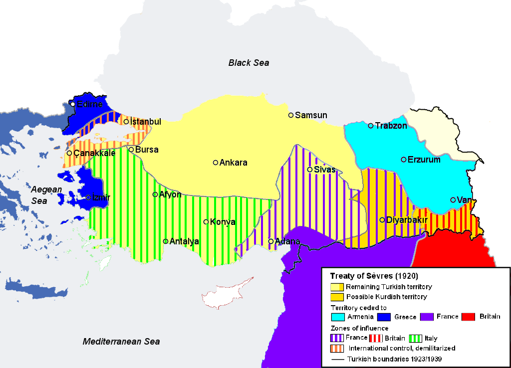
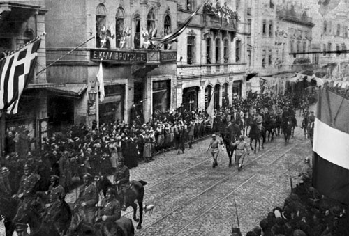
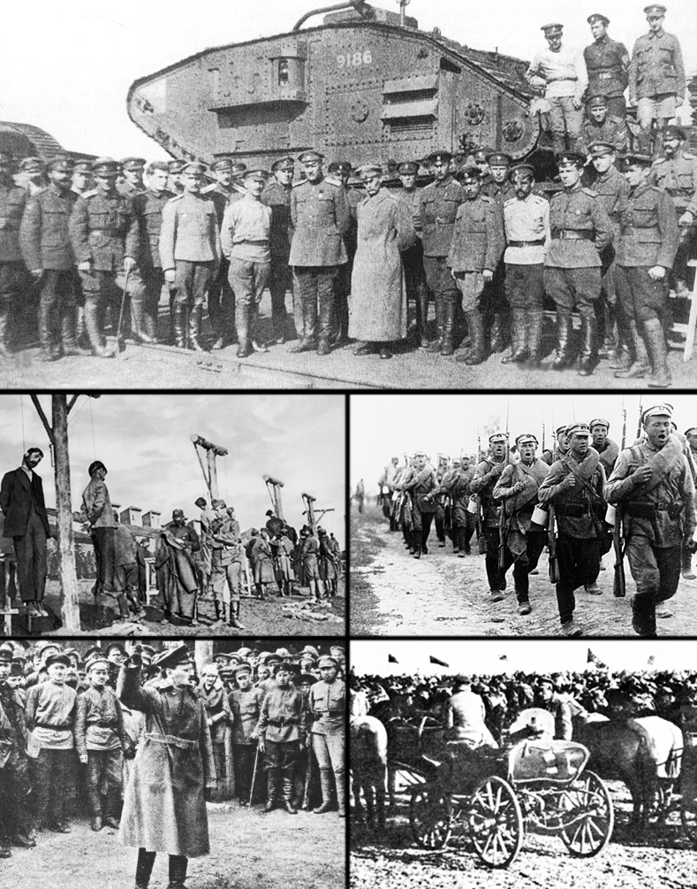
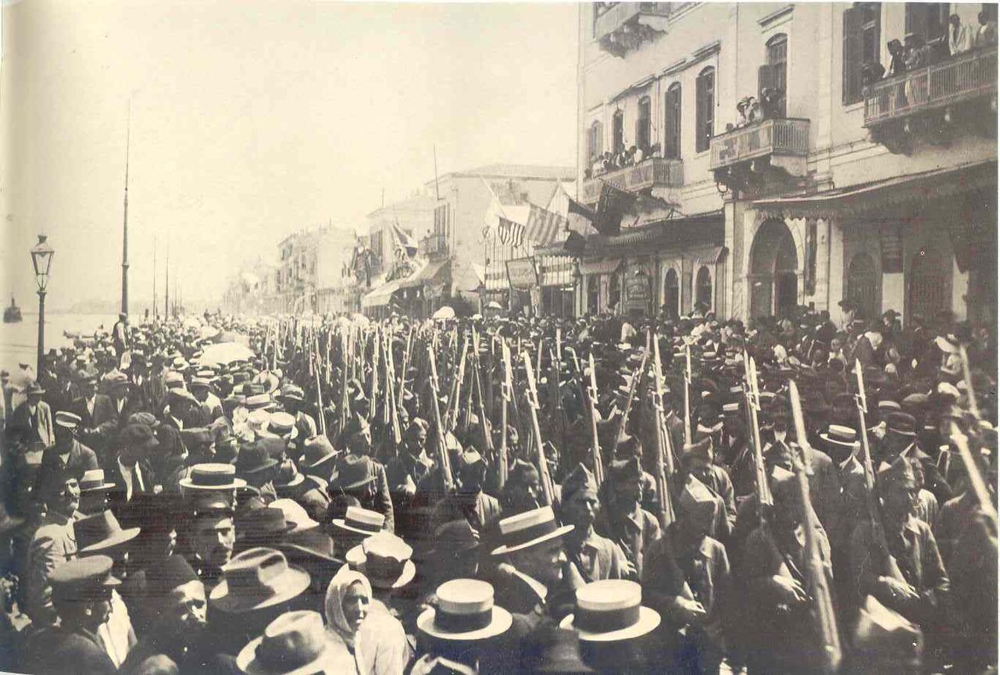
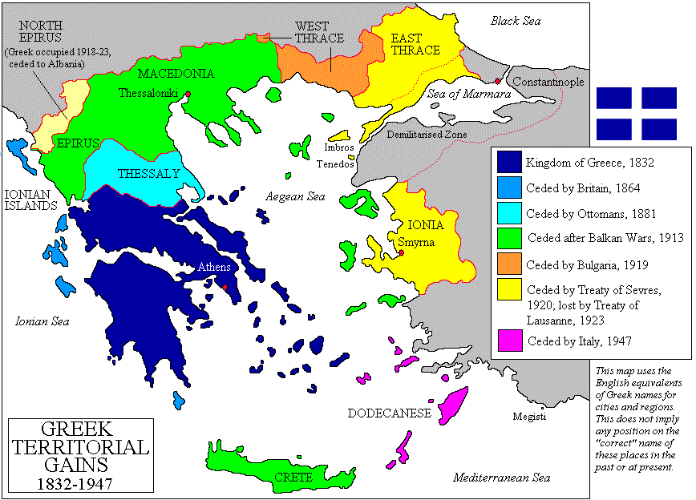
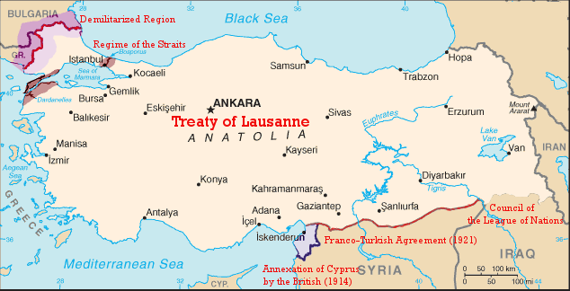

해협을 둘러싼 계산 (1) - 세브르(Sèvres)부터 몽트뢰(Montreux)까지
게시: 2026-04-16T06:30:33+09:00
WW1이 끝날 때 오스만 투르크는 그야말로 무너진 제국이었음. 영국과 치열하게 싸우던 팔레스타인-아라비아-이라크 등지에서 완패했고, 심지어 러시아에게도 카프카스에서 참패를 당하고 아나톨리아 반도 동부까지 내줬다가 러시아가 혁명으로 자멸하자 겨우 되찾은 수준. 이런 오스만 투르크는 독일이나 오스트리아와는 별도로, 연합국과 1920년 8월 세브르(Sèvres) 조약을 맺고 WW1의 패전국으로서의 처지를 뼈저리게 실감하게 됨. 세브르 조약의 주요 내용을 요약하면 다음과 같음. 1. 과거 오스만 투르크 제국의 영토 90% 이상을 강제로 할양당함 2, 제국의 본토인 아나톨리아마저 영국, 프랑스, 이탈리아, 그리스가 분할 점령하거나 영향권 아래 둠. 3. 수도인 이스탄불을 포함한 다다넬즈-보스포러스 해협을 비무장화하고, 오스만 투르크의 주권이 미치지 않는 국제 기구인 '해협 위원회'가 관리. 4. 상비군을 5만 명 이하로 제한하고 해군 함정을 압수하는 등 군사력을 무력화. 5. 과거 유럽열강들이 누렸던 사법·재정적 치외법권인 '카피튈라시온'(Capitulations)의 부활.

(세브르 조약에 따른 영토 할양 및 '외국 영향권'의 모습. 이에 따르면 오스만 투르크는 아나톨리아 반도의 일부만 점유하는 반식민지 국가가 되어버림.) 특히 다다넬즈-보스포러스 해협에 대한 연합국의 입장은 매우 단호했는데, 이 중요한 해협에는 모든 국가의 모든 선박이 자유롭게 항행할 수 있는 권리가 보장되어야 했고, 따라서 다다넬즈에서 보스포러스에 이르는 해협에 접한 모든 영토는 오스만 투르크가 아닌 연합국이 공동 관리하기로 한 것. 물론 전체 구역은 철저한 비무장지대로 관리하기로 함. 그 자체도 문제지만, 오스만 투르크의 수도인 이스탄불조차 예외 없이 그렇게 공동 관리 대상이 됨.

(1918년 말, 점령군으로서 이스탄불로 진입하는 연합군. 저 거리는 Cadde-i Kebir (자데 이 케비르, 거대한 거리라는 뜻))
(자데 이 케비르는 독립전쟁 이후 İstiklal Caddesi (이스티클랄 자데시, 독립 거리)로 개명. 이 거리는 베욜루(Beyoğlu, 예전 이름 Pera)에 있는 유명한 거리임.)
해협은 자연 발생적인 지형이니까 항행의 자유가 보장되는 것이 당연한 거 아니냐고 볼 수도 있으나, 이건 강대국에게 무조건 유리한 조항. 전통적으로, 약소국이 강력한 해운력이나 해군을 가질 수는 없기 때문임. 아마 러시아가 이 세브르 조약에 참여했다면 이야기가 달랐겠으나, 러시아는 승전국이 아니라 혁명으로 인해 소련으로 탈바꿈하기 위해 정신이 없는 상황이었으므로 아무도 그 조항에 대해 토를 달지 않았음.

(적군과 백군이 치열하게 싸웠던 러시아 내전은 1917년 11월부터 1922년 10월말까지)
비록 한심한 패전국이었으나 한때 제국이었던 오스만 투르크인들의 긍지는 살아있었음. 아라비아 반도의 성지 메디나를 지키던 오스만군은 모든 보급이 차단되어 굶으면서도 '성지를 내줄 수는 없다'며 메뚜기를 잡아먹으며 버티다 WW1이 종료된지 72일이 지난 후에야 항복할 정도. 그런 오스만 투르크를 자극한 것은 특히 그리스. 과거 자신들의 피지배국이었던 그리스가 유럽 열강들을 등에 업고 독자적인 군사 행동을 벌여 아나톨리아 서해안의 스미르나에 상륙하여 제멋대로 점령하는 등 수백년간 당했던 피정복민의 한을 풀려고 했던 것.

(1919년 5월, 스미르나에 상륙, 점령하여 거리를 행군하는 그리스군의 모습)

(그리스가 고대 그리스의 영광을 재현하려나? WW1 전후한 그리스의 영토 확장 모습. 특히 1919년 5월 그리스군이 스미르나에 상륙하여 점거한 것은 오스만 사람들의 분노에 불을 질렀음.) 이 치욕적인 세브르 조약에 분노한 오스만 투르크는 케말 파샤가 중심이 되어 연합국에 대해 전쟁을 일으킴. 1919년 5월부터 1922년 10월까지 진행된 이 전쟁은 어떻게 보면 WW1 패전국으로서 받는 불이익에 대해 불만을 가진 오스만 투르크가 반항하는 것이라고 볼 수도 있으나, 오스만 투르크는 이 전쟁을 서방 외세에 대한 독립 전쟁이라고 부름. 아무튼 그리스 프랑스 등과 실제로 전투를 벌여 쌍방에 수만에 달하는 인명 피해까지 발생함. 영국과 프랑스 등이 진심으로 이 싸움에 뛰어들었다면 이야기가 어떻게 되었을지 모르겠으나, 영국도 프랑스도 간신히 WW1의 악몽에서 벗어나려던 참에 벌어진 이 전쟁에 진심은 아니었음. 모든 전쟁은 간절한 쪽이 승리한다고, 결국 전쟁은 케말 파샤의 승리로 끝나고 오스만 투르크는 앙카라를 수도로 하는 튀르키예 공화국으로 재탄생. 이 전쟁이 벌어진 주요 원인이었던 셰브르 조약은 당연히 폐지되었고, 1923년 7월 스위스 로잔에서 체결된 로잔(Lausanne) 조약으로 대체됨. 로잔 조약의 내용을 요약하면 다음과 같음. 1. 현재의 튀르키예 영토를 국제적으로 확정하며 주권을 회복. 2. 다다넬즈-보스포러스 해협을 비무장화하고, 모든 국가의 상선과 군함이 자유롭게 통과할 수 있도록 개방. 3. 해협 관리를 위해 튀르키예가 아닌 국제 연맹 산하의 '해협 위원회'를 설치하여 터키의 실질적인 통제권을 박탈함. 4. 그리스와 터키 간의 대규모 인구 교환을 결정하여 종교에 따라 약 200만 명의 거주민을 강제로 이주시키기로 합의. 5. 오스만 제국 시절의 불평등 조약인 '카피튈라시온(치외법권 및 경제 특혜)'을 전면 폐지하여 터키의 경제적 자립을 허용.

(로잔 조약에 따른 튀르키예 공화국의 국경선. 다다넬즈-보스포러스 해협은 여전히 외국의 관리를 받게 되었으나, 최소한 그 사이의 마르마라해의 연안지대는 튀르키예의 주권이 회복됨.) 이 포스팅의 주요 관심사인 해협 문제에 중점을 두자면, 여전히 다다넬즈-보스포러스 해협은 비무장 상태로 두어야 했고, 여전히 외국 세력, 즉 국제연맹에서 관리를 하게 됨. 이는 튀르키예로서는 매우 굴욕적인 내용. 이 로잔 조약에는 흑해 연안국인 소련도 참여했고, 소련의 입장은 '상선은 몰라도 군함은 아예 통과를 할 수 없도록 해야 한다'라는 것. 소련은 당시 신생 공산국으로서 해군력이 약했고, 언제 영국 프랑스 등의 제국주의자들이 함대를 몰고 흑해로 쳐들어와서 공산주의를 타도하려할지 몰라 전전긍긍하던 신세였으므로 흑해 내로 외국 군함이 들어오는 것을 극도로 두려워했기 때문. 그러나 국제 사회에서는 힘이 곧 법인지라, 결국 이 안대로 통과. 하지만 로잔 조약도 오래 가지 못함. 1936년 7월, 다시 스위스 몽트뢰에서 체결된 몽트뢰 조약(Montreux Convention)으로 대체된 것. 이 몽트뢰 조약이 지금까지도 그대로 지켜지고 있음. 그 내용을 요약하면 다음과 같음. 1. 튀르키예가 다다넬즈-보스포러스 해협에 군대를 주둔시키고 요새화할 수 있는 완전한 주권을 회복. 2. 국제연맹 산하의 '해협 위원회'를 해체하여 해협의 모든 관리 및 통제 권한을 튀르키예 정부로 이관함으로써 외부의 간섭을 차단. 3. 흑해 연안국(소련 등)과 비연안국(영국, 미국 등)의 군함 통항 규정을 차별화하여, 비연안국 대형 군함의 흑해 진입을 엄격히 제한. 4. 조약 전문 및 부속서에 '항공모함'을 명시하여 통과를 사실상 불허하고, 전함과 잠수함에 대해서는 흑해 연안국에 한해 까다로운 예외적 통과 조건을 설정. 5. 해협 통행 수수료를 '금 프랑(Germinal Franc)' 가치에 연동하여 튀르키예가 직접 징수하게 함으로써, 화폐 가치 변동과 무관한 안정적인 경제적 실리를 확보. 이걸 보면 다다넬즈-보스포러스 해협에 대한 튀르키예의 주권이 비로소 확 풀린 것을 알 수 있음. 로잔 조약 때까지만 해도 강경하던 연합국들이 갑자기 왜 이렇게 후해졌을까? 1936년이면 아직은 전함의 시대였는데, 항공모함은 대체 왜 콕 집어서 불허했을까? 이유야 어쨌건 저렇다면 러시아 항공모함은 흑해로는 못 들어가는 것일까? WW2 때 독일군은 흑해 내의 세바스토폴 등을 공격했는데, 그때 흑해 내에서는 독일 U-boat가 활동을 못했을까? 그런 궁금증은 다음 주에...